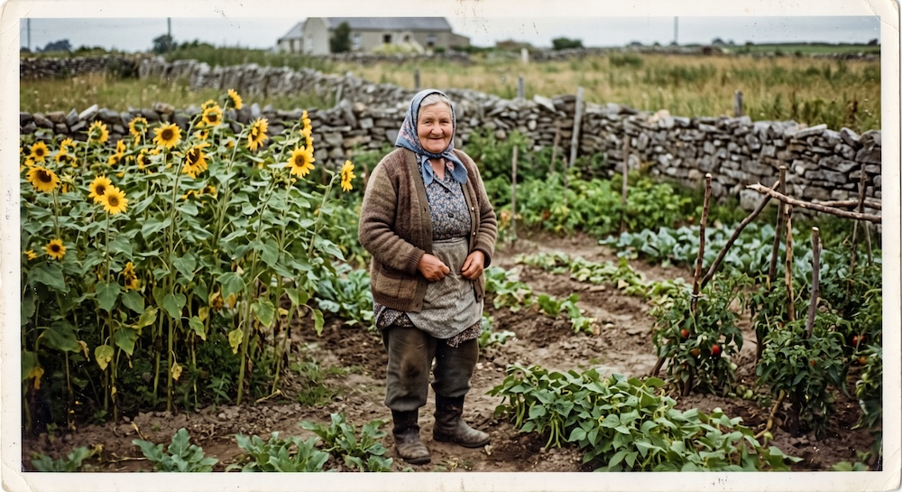

Слънчевото начало
Всичко започна от нашата баба, която отглеждаше с огромна любов красиви, високи слънчогледи за украса на двора. Хората от селото постоянно се възхищаваха на ярките цветове и я молеха за няколко стръка. Тъй като не искаха да ги вземат просто така, започнаха да ѝ оставят по някоя монета. Така съвсем естествено се роди идеята за нашия малък магазин.